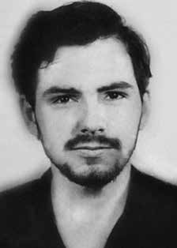

Luiz
Eurico
Tejera
Lisbôa
BIOGRAFIA
Primogênito de sete irmãos, sendo um deles o músico Nei Lisboa, iniciou sua militância política na Juventude Estudantil Católica. Integrou o Partido Comunista Brasileiro (PCB), a Vanguarda Armada Revolucionária – Palmares (VAR-Palmares) e a Ação Libertadora Nacional (ALN). Estudou no Colégio Estadual Júlio de Castilhos, em Porto Alegre, centro da efervescência do movimento estudantil secundarista, onde fez parte do Grêmio Estudantil e acabou expulso, junto com outros colegas, por motivos políticos.
Mudou-se para Santa Maria e foi membro da diretoria da União Gaúcha dos Estudantes Secundários. Em 1969, casou-se com Suzana Keniger Lisboa e começou a trabalhar como escriturário no Serviço Nacional de Indústrias (Senai). Porém, em outubro do mesmo ano, foi condenado à revelia a seis meses de prisão com base na Lei de Segurança Nacional, o que levou o casal a optar pela clandestinidade.
Esteve algum tempo em Cuba, retornando ao Brasil em 1971, na tentativa de reorganizar a ALN em Porto Alegre. Foi preso em circunstâncias desconhecidas em São Paulo, na primeira semana de setembro de 1972, e está desaparecido desde então. Supõe-se que tenha morrido poucos dias depois, sob tortura, aos 24 anos de idade.
Somente em junho de 1979, o Comitê Brasileiro pela Anistia conseguiu localizar o corpo de Luiz Eurico, enterrado com o nome de Nelson Bueno, no Cemitério Dom Bosco, em Perus, São Paulo. Dentre os desaparecidos políticos do período da ditadura militar, ele foi o primeiro cujo corpo foi encontrado.
Pouco depois, uma foto de Luiz Eurico foi capa de várias revistas nacionais, e a carta escrita por sua mãe, Clélia Tejera Lisboa, com o título “Não choro de pena de meu filho”, tornou-se um símbolo da luta pela anistia e pelo reconhecimento da existência dos desaparecidos políticos no Brasil. Em 1993, a Editora Tchê, em parceria com o Instituto Estadual do Livro do Rio Grande do Sul, publicou o livro “Condições ideais para o amor”, com poesias e cartas de Luiz Eurico Tejera Lisboa e depoimentos de pessoas que o conheceram. Em junho de 2013, um laudo da Comissão Nacional da Verdade refutou a versão oficial de que Luiz Eurico tinha cometido suicídio.
The firstborn of seven brothers, one of them being the musician Nei Lisboa, he began his political activism in the Catholic Student Youth. He was a member of the Brazilian Communist Party (PCB), the Revolutionary Armed Vanguard – Palmares (VAR-Palmares) and the National Liberation Action (ALN). He studied at Colégio Estadual Júlio de Castilhos, in Porto Alegre, the center of the effervescence of the high school student movement, where he was part of the Student Union and ended up expelled, along with other colleagues, for political reasons.
He moved to Santa Maria and was a member of the board of the União Gaúcha dos Estudantes Secundários. In 1969, he married Suzana Keniger Lisboa and began working as a clerk at the National Industry Service (Senai). However, in October of the same year, he was sentenced in absentia to six months in prison under the National Security Law, which led the couple to opt for hiding.
He spent some time in Cuba, returning to Brazil in 1971, in an attempt to reorganize the ALN in Porto Alegre. He was arrested under unknown circumstances in São Paulo, in the first week of September 1972, and has been missing since then. It is assumed that he died a few days later, under torture, at the age of 24.
Only in June 1979, the Brazilian Committee for Amnesty managed to locate the body of Luiz Eurico, buried under the name Nelson Bueno, in the Dom Bosco Cemetery, in Perus, São Paulo. Among the missing politicians from the period of the military dictatorship, he was the first whose body was found.
Shortly afterwards, a photo of Luiz Eurico was on the cover of several national magazines, and the letter written by his mother, Clélia Tejera Lisboa, with the title “I don’t cry because of my son”, became a symbol of the fight for amnesty and recognition of the existence of politically disappeared people in Brazil. In 1993, Editora Tchê, in partnership with the Rio Grande do Sul State Book Institute, published the book “Ideal Conditions for Love”, with poetry and letters by Luiz Eurico Tejera Lisboa and testimonies from people who knew him. In June 2013, a report from the National Truth Commission refuted the official version that Luiz Eurico had committed suicide.
Primogénito de siete hermanos, uno de ellos el músico Nei Lisboa, inició su activismo político en las Juventudes Estudiantiles Católicas. Integró el Partido Comunista Brasileño (PCB), la Vanguardia Armada Revolucionaria – Palmares (VAR-Palmares) y la Acción de Liberación Nacional (ALN). Estudió en el Colégio Estadual Júlio de Castilhos, en Porto Alegre, centro de la efervescencia del movimiento estudiantil de secundaria, donde formó parte de la Unión de Estudiantes y acabó expulsado, junto a otros compañeros, por motivos políticos.
Se mudó a Santa María y fue miembro del directorio de la União Gaúcha dos Estudantes Secundários. En 1969 se casó con Suzana Keniger Lisboa y comenzó a trabajar como administrativa en el Servicio Nacional de Industria (Senai). Sin embargo, en octubre del mismo año fue condenado en rebeldía a seis meses de prisión en aplicación de la Ley de Seguridad Nacional, lo que llevó a la pareja a optar por la clandestinidad.
Pasó algún tiempo en Cuba y regresó a Brasil en 1971, en un intento de reorganizar la ALN en Porto Alegre. Fue detenido en circunstancias desconocidas en São Paulo, en la primera semana de septiembre de 1972, y desde entonces se encuentra desaparecido. Se supone que murió pocos días después, bajo tortura, a la edad de 24 años.
Recién en junio de 1979, el Comité Brasileño de Amnistía logró localizar el cuerpo de Luiz Eurico, enterrado bajo el nombre de Nelson Bueno, en el cementerio Dom Bosco, en Perus, São Paulo. Entre los políticos desaparecidos de la época de la dictadura militar, él fue el primero cuyo cuerpo fue encontrado.
Poco después, una foto de Luiz Eurico apareció en la portada de varias revistas nacionales, y la carta escrita por su madre, Clélia Tejera Lisboa, con el título “No lloro por mi hijo”, se convirtió en un símbolo de la lucha por la amnistía y el reconocimiento de la existencia de personas desaparecidas políticamente en Brasil. En 1993, la Editora Tchê, en colaboración con el Instituto del Libro del Estado de Rio Grande do Sul, publicó el libro “Condiciones ideales para el amor”, con poesía y cartas de Luiz Eurico Tejera Lisboa y testimonios de personas que lo conocieron. En junio de 2013, un informe de la Comisión Nacional de la Verdad desmintió la versión oficial de que Luiz Eurico se había suicidado.
CIRCUNSTÂNCIAS DA MORTE
Circunstância da morte não informada.
Circumstance of death not reported.
Circunstancias de la muerte no informadas.